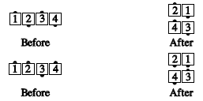

From a wave or line: With each half of the wave/line working as a unit, the ends
Cross Fold and the centers
follow along so as to keep each mini-wave or couple intact. If the ends start out facing the same way, they pass right
shoulders as they go.

Teaching Hint: This call is a more general version of Wheel and
Deal—the centers are just turned around.
© Copyright 1983, 1986-1988, 1995-2017 Bill Davis, John Sybalsky and CALLERLAB Inc., The International Association of Square Dance Callers. Permission to reprint, republish, and create derivative works without royalty is hereby granted, provided this notice appears. Publication on the Internet of derivative works without royalty is hereby granted provided this notice appears. Permission to quote parts or all of this document without royalty is hereby granted, provided this notice is included. Information contained herein shall not be changed nor revised in any derivation or publication.